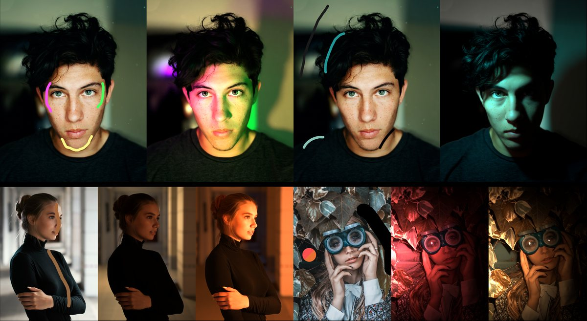
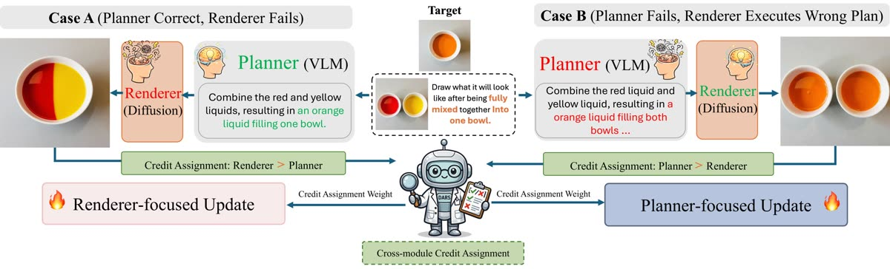
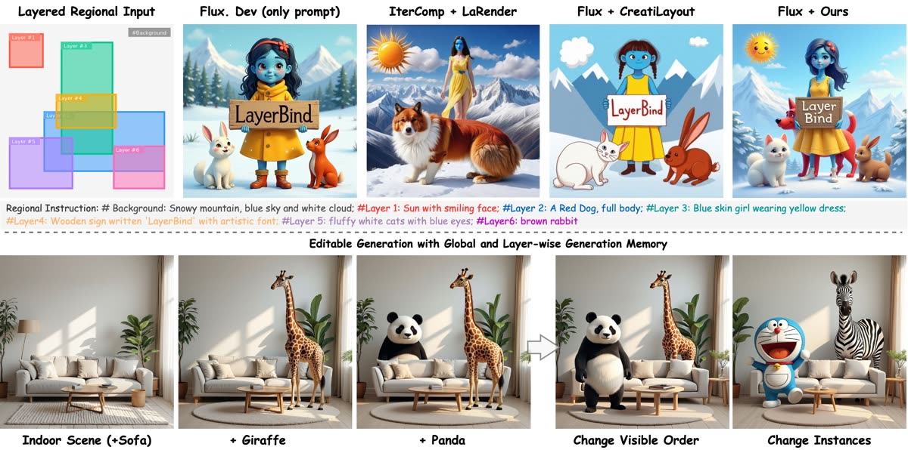
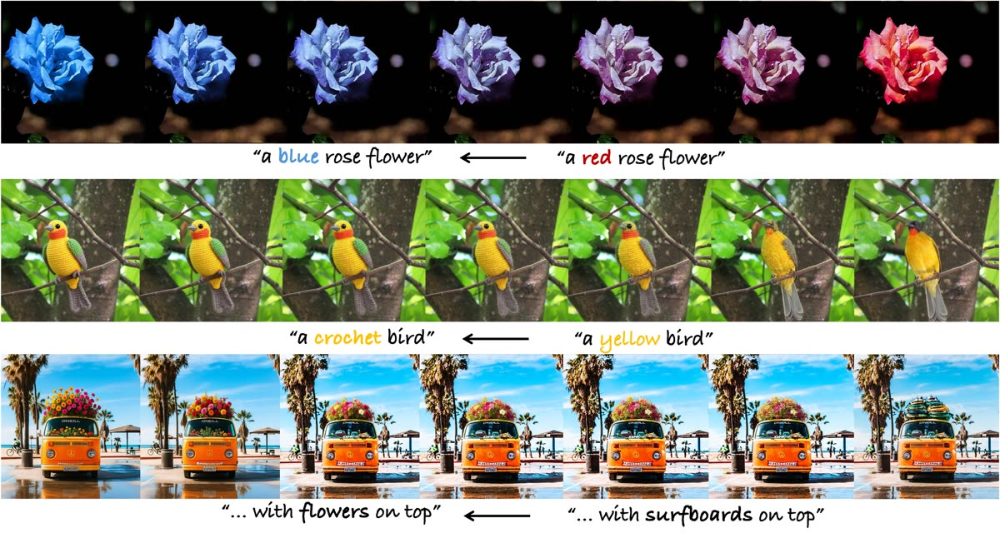
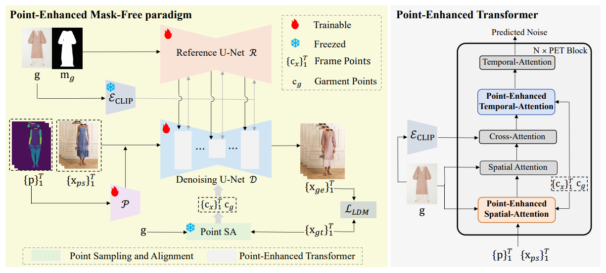
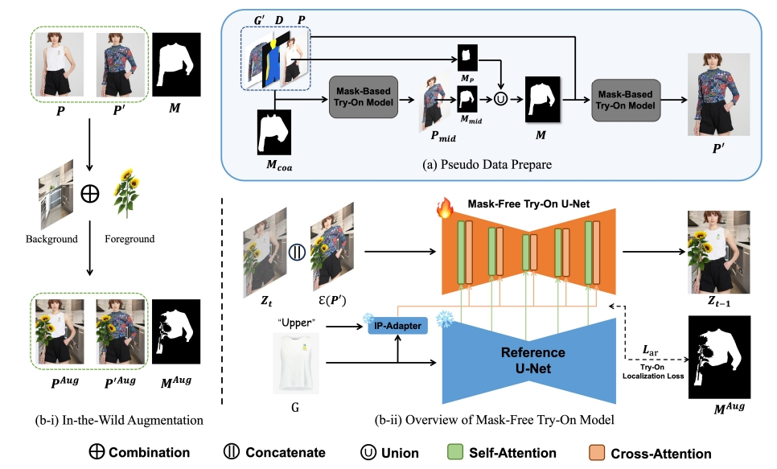
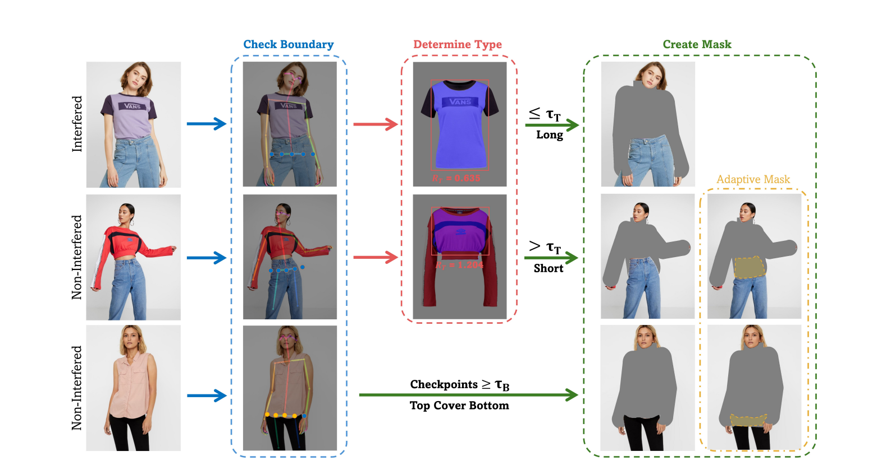
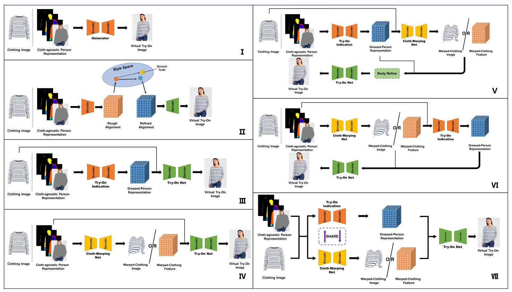

arXiv 2026
Dior: Drawing the Light of Image via Material-Decoupled Illumination Representation
arXiv preprint, 2026
Ph.D. researcher
Tianjin University
Perfection is reason made sensual.
I am a Ph.D. student at Tianjin University (expected 2029) and a research intern at Kling AI Research. My current focus is on video models and world models, building on my work in image generation, image editing, and virtual try-on.
Notes from my research.
Research
Image generation, editing & virtual try-on

arXiv preprint, 2026

ACM International Conference on Multimedia (ACM MM), 2026

IEEE/CVF Conference on Computer Vision and Pattern Recognition (CVPR), 2026 · Poster

IEEE/CVF Conference on Computer Vision and Pattern Recognition Findings (CVPR Findings), 2026
IEEE/CVF Conference on Computer Vision and Pattern Recognition Findings (CVPR Findings), 2026

IEEE Transactions on Consumer Electronics (TCE), 2026

IEEE/CVF Conference on Computer Vision and Pattern Recognition (CVPR), 2025

IEEE Transactions on Circuits and Systems for Video Technology (TCSVT)

International Journal of Computer Vision (IJCV), 2024
I received my M.S. degree in computer vision from Tianjin University, advised by Prof. Dan Song, and my B.S. degree in Electronic Information from Hebei University of Technology, where I worked with Prof. Zhenxv Bai.
Research Intern
2026.07 – Present
Research Intern
2025 – 2026.07
Research Intern
2024
Ph.D. Student · Expected 2029
M.S. in Computer Vision · 2022–2025